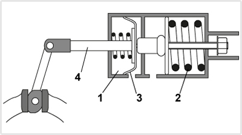
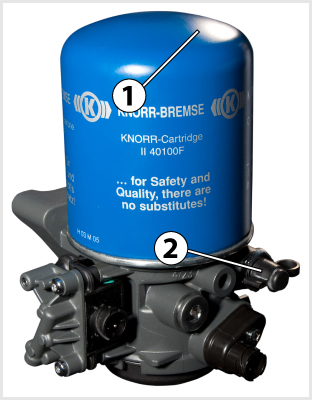
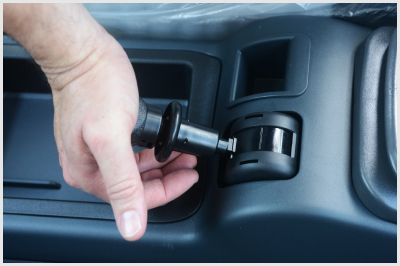
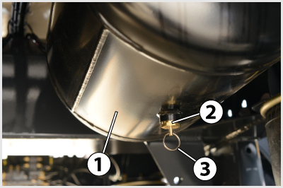
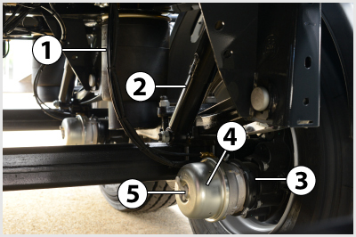
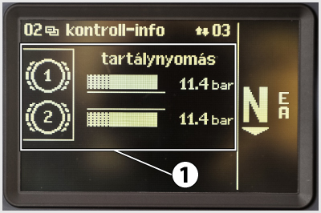
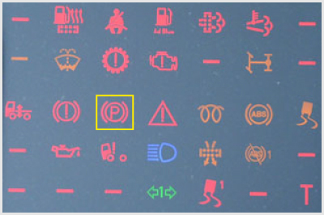
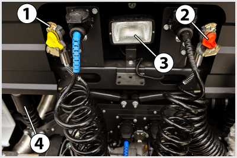
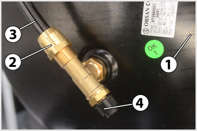

- 315. Hogyan végzi el a jármű rögzítőfékezését az ábrán látható rugóerő-tárolós fékhenger? #704421
- A rögzítőfékszelep az 1-es jelű hengerből kiengedi a sűrített levegőt (megszünteti a túlnyomást), ezáltal az előfeszített 2-es jelű rugó képes elmozdítani a 3-as dugattyút, illetve a 4-es fékrudazatot.
- A rögzítőfékszelep sűrített levegőt enged az 1-es jelű hengerbe, amelynek nyomása a 3-as dugattyút és a 4-es fékrudazatot a 2-es rugó ellenében elmozdítja.
- 316. A rögzítőfék-rendszer... #704439
- legalább a jármű egy tengelyén található összes kereket fékezi, és képes arra, hogy a járművet tartósan rögzítse, akár a vezető távollétében is.
- a jármű összes kerekét fékezi, és képes arra, hogy a járművet tartósan rögzítse, akár a vezető távollétében is.
- a sebességváltó legalacsonyabb fokozatának bekapcsolásával rögzíti a járművet.
- legalább a jármű egy kerekét fékezi, és képes arra, hogy a járművet tartósan rögzítse, akár a vezető távollétében is.
- 317. Amikor a többkörös légfékberendezés valamelyik fékköre tömítetlen, meghibásodik, akkor a védőszelep... #704440
- nem engedi leürülni az ép körök légtartályait, sőt lehetővé teszi azok további töltését is.
- elektromos jelet ad a műszerfalon található fékrendszer figyelmeztető lámpának.
- működésbe hozza a biztonsági fékrendszert.
- 318. Mi a dinamikus fékerőszabályzó rendeltetése? #704468
- A tengelyterhelés függvényében módosítja a fékerőt.
- Az útfelület állapotának (száraz, nedves, havas stb.) megfelelően módosítja a kerékfékerőket.
- Megakadályozza a kerekek blokkolását.
- Megakadályozza a hajtott kerekek kipörgését.
- 319. Mi történik akkor, ha a rugóerő-tárolós fékhengerekkel működtetett rögzítőfék-berendezés légtartályában, a rögzítőfék oldott állapotában a túlnyomás megszűnik? #704502
- A rögzítőfék-berendezés működésbe lép, és befékezi a járművet.
- Ilyenkor nem lehetséges a jármű rögzítőfékezése.
- Nehezebbé válik a rögzítőfékkar behúzása.
- Nem lehet beindítani a motort.

- 320. A képen látható szerkezet egy... #704539
- légfékrendszerbe épített légszárító.
- olajszűrő.
- tüzelőanyag-szűrő.
- levegőszűrő.

- 321. Mire szolgál a rögzítőfékszelep képen látható kontrollállása pótkocsi vontatására alkalmas légfékes géjárművön? #704576
- Annak ellenőrzésére, hogy a vontató rögzítőfékje egyedül (a pótkocsi üzemi fékek nélkül) is képes lesz-e megtartani a szerelvényt az adott helyzetben.
- Annak ellenőrzésére, hogy a pótkocsi rögzítőfékje egyedül is képes lesz-e megtartani a szerelvényt az adott helyzetben.
- Annak ellenőrzésére, hogy a pótkocsi üzemi fékje egyedül is képes-e megtartani a szerelvényt az adott helyzetben.
- Annak ellenőrzésére, hogy a vontató és a pótkocsi rögzítőfékje együttesen képes-e megtartani a szerelvényt az adott helyzetben.
- 322. Hogyan kapcsolható be a pótkocsi vontatására alkalmas légfékes géjárművön a rögzítőfékszelep képen látható kontrollállása? #704577
- A rögzítőfékkart a normál rögzítőfékezési helyzetéből annak lenyomása után hátra kell billenteni.
- A rögzítőfékkart oldott helyzetéből annak lenyomása után hátra kell billenteni.
- A rögzítőfékkart oldott helyzetéből annak lenyomása után előre kell billenteni.
- A rögzítőfékkart a normál rögzítőfékezési helyzetéből annak lenyomása után előre kell billenteni.

- 323. A képen látható tehergépkocsi-alváz pótkocsi fékezésre szolgáló kapcsolófejei közül... #704586
- a 2-es jelű, piros fedelű a töltő-, a 3-as jelű, sárga fedelű a fékezővezetéké.
- a 2-es jelű, piros fedelű a fékező-, a 3-as jelű, sárga fedelű a töltővezetéké.

- 324. A képen látható 2-es jelű alkatrész... #704597
- a légtartály víztelenítő szelepe.
- a tüzelőanyag-tartály leeresztő szelepe.
- a víztartály leeresztő szelepe.
- a légtartály fűtőbetétje.

- 325. Mikor van szükség a képen látható 5-ös jelű műanyag fedél mögött található rugóerőtárolós rögzítőfék henger oldócsavarra? #704601
- Ha a rögzítőfék a fékrendszer hibája esetén normál módon nem oldható, és a járművet vontatni kell.
- Ha meghibásodott a rögzítőfék rendszer, de a járművel feltétlenül tovább kell közlekedni.
- A szükséges rögzítőfékhatás pontos bellításakor.
- A kerékfékszerkezet hézagjának utánállításakor.

- 326. Mit jelent a gépjármű fedélzeti számítógépén a képen látható 1-es jelű kijelzés? #704642
- A két üzemi féklégtartály nyomása egyaránt 11,4 bar.
- A két üzemi fékkörbe kivezérelt kamranyomás egyaránt 11,4 bar.
- A vontató és a pótkocsi légtartályaiban a nyomás egyaránt 11,4 bar.
- Az üzemi fék megfelelő működéséhez szükséges tartálynyomás mindkét fékkörben 11,4 bar.

- 327. Mikor világít a képen bekeretezett visszajelző lámpa? #704709
- Ha a rögzítőféket behúzták, vagy a rugóerőtárolós rögzítőfék tartályaiban nem elegendő a nyomás annak oldásához.
- Ha a rögzítőféket oldották.
- Ha az automata váltó meghibásodott.
- Ha az automata váltót parkolási helyzetbe állították.
- 328. Lehet-e tölteni a gumiabroncsokat a gépjármű sűrítettlevegő-rendszeréből? #704723
- Igen, a nyomásszabályozón elhelyezett abroncstöltő csatlakozó, vagy a fékkörök vizsgálócsatlakozóinak felhasználásával.
- Nem, mert ehhez nem elég a rendszernyomás.
- Általában nem, csak olyan járműveken, amelyek speciális abroncsnyomás vátloztató rendszerrel vannak felszerelve.
- Nem, mert a jármű légfékrendszerében található sűrített levegő ehhez nem elég tiszta.
- 329. Mi a légfékrendszerben található főfékszelep (pedálszelep) feladata? #704725
- A járművezetőnek a fékpedálra gyakorolt láberejével arányos nyomású sűrített levegőt vezérel ki az üzemi fékkörökbe.
- A rözítőfék oldására szolgál.
- A pótkocsira kivezérelt üzemi féknyomást állítja be.
- 330. Miért kell eltávolítani a légtartályokban összegyűlt vizet? #704871
- Mert télen megfagyhat és ezzel üzemképtelenséget okozhat, illetve összenyomhatatlansága miatt csökkenti a tartályok hasznos energiatároló képességét.
- Mert a víz jóval nehezebb, mint a levegő.
- Mert növeli a fékrendszer időkésedelmét.
- 331. Lehet-e víz a jármű(szerelvény) tartályaiban, ha a gépjárművet légszárítóval szerelték fel? #704872
- Csak akkor, ha a légszárító patronja elszennyeződött, vagy a kompresszor nem képes a levegőfogyasztást kellő regenerációs idővel (üresjárattal) biztosítani.
- Igen, mert a légszárító csak részlegesen képes eltávolítani a vizet a sűrített levegőből.
- Nem.
- Igen, ha az átlagosnál magasabb a levegő páratartalma (pl. esős időben).
- 332. Ha a kétkörös légfékberendezés egyik fékköre megsérül akkor... #704873
- a másik fékkörrel a gépjármű fékezhető, de a fékút hosszabb lesz.
- a másik fékkör levegőt enged a sérült fékkörbe a levegővesztés pótlására.
- a másik fékkör átveszi a sérült fékkör feladatát és nagyobb erővel fékez, hogy a jármű előírt fékhatása teljesíthető legyen.
- a másik fékkörrel a gépjármű fékezhető marad, de csak egy alkalommal, mert az utántöltése ennek a fékkörnek is megszakad.
- 333. Mit jelez a két légnyomásmérő-műszer a kétkörös légfékberendezéssel ellátott gépjármű műszerfalán? #704874
- Az egyik műszer az első a másik a második üzemi fékkör tartálynyomását mutatja. Kétmutatós műszerek esetén a piros mutató a fékezőnyomást, a fehér vagy fekete mutató a tartálynoymást jelzi.
- Az egyik nyomásmérő-műszer az üzemi fékkörök kivezérelt nyomását, a másik pedig a rugóerőtárolós rögzítőfék és a segédkör tartálynyomását mutatja.
- Az egyik nyomásmérő-műszer a vontató-, a másik a pótkocsi töltő- és fékezőkör nyomását jelzi vissza.
- Az egyik műszer a kompresszor, a másik a féklégtartályok nyomását mutatja.
- 334. Milyen rögzítőféket alkalmaznak általában a légfékrendszerrel ellátott haszongépjárműveknél? #704876
- Rugóerőtárolós munkahengerrel működtetett rögzítőféket.
- Rudazattal működtetett hidraulikus rögzítőféket.
- A kardántengelyre ható dobfékes rögzítőféket.
- Huzallal műkdtetett mechanikus rögzítőféket.

- 335. A képen látható 1-es jelű alkatrész egy... #714638
- nyergesvontató kétvezetékes pótkocsifékező-rendszerének fékező kapcsolófeje.
- nyergesvontató kétvezetékes pótkocsifékező-rendszerének töltő kapcsolófeje.
- platós tehergépkocsi kétvezetékes pótkocsifékező-rendszerének fékező kapcsolófeje.
- platós tehergépkocsi kétvezetékes pótkocsifékező-rendszerének töltő kapcsolófeje.

- 336. A képen látható 1-es jelű pótkocsi fékező szelepre felszerelt 2-es jelű oldószelep... #714639
- automatikusan visszatér az oldott állapotból a fékezési helyzetbe, ha a pótkocsi töltővezetéke a vontatóra felkapcsolva ismét nyomás alá kerül.
- nem tér automatikusan vissza az oldott állapotból a fékezési helyzetbe, ha a pótkocsit újra felkapcsolják a vontatóra. A fékezési helyzetet a vezetőnek kell beállítania.
- oldott állapotára piros visszajelző lámpa figyelmeztet a vontató műszerfalán.
- fékezési állapotát zöld visszajelző lámpa mutatja a vontató műszerfalán.
- 337. Mi a feladata a vontató légfékrendszerében található pótkocsifék-vezérlő szelepnek? #714640
- Vezérli a pótkocsi fékezését a vontató bármelyik üzemi fékkörének vagy rögzítőfékkörének működésekor, azzal egyidőben és arányosan.
- A pótkocsi leszakadása esetén biztosítja a vontató jármű fékrendszerének működőképességét.
- A pótkocsi terhelésének megfelelően változtatja a vontató jármű fékhatását.
- Érzékeli a pótkocsi felkapcsolását a vontatóra és visszajelző lámpán keresztül tájékoztatja errő a járművezetőt.
- 338. A képen látható 5-ös jelű műanyag fedél kiemelése után válik hozzáférhetővé... #714644
- a rugóerőtárolós rögzítőfék henger oldócsavarja.
- a rugóerőtárolós rögzítőfékkör vizsgálócsatlakozója.
- a rugóerőtárolós rögzítőfék henger nyomásérzékelője.
- a rugóerőtárolós rögzítőfék henger levegőcsatlakozója.
- 339. A sűrített levegő a kétkörös légfék légtartályaiba... #714655
- a többkörös védőszelepen keresztül jut be.
- visszacsapószelepen áthaladva jut be.
- minden esetben nyomáskorlátozó szelepen áthaladva, csökkentett nyomással lép be.
- a pedálszelepen áthaladva lép be.

- 340. A képen látható 3-as jelű alkatrész egy... #714657
- légfékrendszerben alalmazott műanyag csővezeték.
- hidraulikus fékrendszerben alkalmazott műanyag csővezeték.
- tüzelőanyag-rendszerben alkalmazott műanyag csővezeték.
- kenőrendszerben alkalmazott műanyag csővezeték.
- 341. A képen látható 4-es jelű alkatrész egy... #714658
- légfékrendszerben alkalmazott vizsgálócsatlakozó.
- hidraulikus fékrendszerben alkalmazott vizsgálócsatlakozó.
- hidraulikus fékrendszerben alkalmazott gyorscsatlakozó.
- kenőrendszerben alkalmazott gyorscsatlakozó.
- 342. Hogyan érzékeli a jármű terhelési állapotát a légfékrendszerben található dinamikus terhelésfüggő fékerőszabályozó? #714669
- Mechanikus rugózású járműveken a rugók összenyomódását, légrugózású járműveken a légrugónyomást érzékeli.
- A relészelep által előállított nyomást érzékeli, amely arányos a jármű terhelési állapotával.
- A jármű fékezése során a dinamikus átterhelődésből adódó bólintást érzékeli.
- A vezetőnek kell a fékerőszabályozó kézikarján beállítani a jármű terhelési állapotát.
- 343. A képen látható 3-as jelű gyűrűvel a légtartály víztelenítéséhez a víztelenítő szelepet... #714705
- zárt helyzetéből ki kell billenteni, a szelep zárt helyzetbe való visszatérése automatikus.
- az óra járásával ellentétesen ki kell hajtani, majd a víz távozását követően a szelepet ismét meg kell húzni.
- függőleges irányban kb. 2 cm-re ki kell húzni, majd a víz távozását követően el kell engedni, mert a szelep visszatérése a zárt helyzetbe automatikus.
- az óra járásával egyezően ki kell hajtani, majd a víz távozását követően a szelepet ismét meg kell húzni.
- 344. A kép egy nyergesvontató fülkéjének hátfalát és annak környezetét mutatja. Az 1-es és 2-es jelű kapcsolófejek... #721203
- szelepes kivitelűek.
- szabad átmenetűek.
- közül az 1-es jelű szabad átmenetű, a 2-es jelű szelepes.
- közül az 1-es jelű szelepes, a 2-es jelű szabad átmenetű.
- 345. A képen látható berendezés egy... #721204
- pótkocsi-fékezőszelep oldószeleppel.
- pótkocsi-fékvezérlőszelep.
- relészelep.
- fékerőszabályozó.
- 346. Kétvezetékes sűrített levegős fékrendszer esetén a vontatón található két kapcsolófej közül... #721205
- a piros fedelű a töltő, a sárga pedig a fékező csatlakozó.
- a piros fedelű a pótkocsi üzemifék, a sárga pedig a pótkocsi rögzítőfék vezérlésére szolgál.
- a piros fedelű a töltő, a sárga pedig a biztonsági csatlakozó, utóbbi a pótkocsi leszakadásakor biztosítja az automatikus befékeződést.
- a sárga fedelű a töltő, a piros pedig a fékező csatlakozó.
- 347. A rögzítőfék old, ha a rögzítőfékszelep működtető karját elfordítva... #721206
- a rugóerő-tárolós fékhengerbe - a rögzítőfékszelepen át - a légtartály felől beáramló sűrített levegő a dugattyú (vagy membrán) közvetítésével a működtető rugót összenyomja.
- a szelep a rugóerő-tárolós fékhengerekből kiengedi a sűrített levegőt.
- 348. Hány és milyen határozott helyzete van a rugóerőtárolós rögzítőfék kézikarjának vontatást is végző tehergépkocsi esetében? #721207
- Három: fék oldva, rögzítőfékezés (pótkocsi üzemi fék is működik) és ellenőrző állás (pótkocsi üzemi fék oldva).
- Kettő: fék oldva és rögzítőfékezés.
- Három: fék oldva, vontató rögzítőfékezése és pótkocsi rögzítőfékezése.
- 349. Kell-e külön levegőtisztító és fagymentesítő eszközt elhelyezni a légfékrendszerbe, ha abba légszárítót építettek? #721212
- Nem szükséges.
- Igen, erre ilyenkor is szükség van.
- 350. A képen látható 3-as jelű alkatrész... #721260
- a légtartály víztelenítő szelepének nyitására szolgáló gyűrű.
- a tüzelőanyag-tartály leeresztő szelepének nyitására szolgáló gyűrű.
- a víztartály leeresztő szelepének nyitására szolgáló gyűrű.
- a légtartály fűtőbetétjének kihúzására szolgáló gyűrű.
- 351. Hogyan lehet eltávolítani a légtartályokból az esetlegesen összegyűlt vizet? #721261
- A légtartály alján levő kézi működtetésű víztelenítő szelep elbillentésével, esetleg automata víztelenítőszeleppel.
- A tartály alján levő kondenzvíz-leeresztő csavar kicsavarásával.
- A légtartály után kötött víz-olaj leválasztóval.
- A légtartály oldalán található tisztítónyílás szabaddá tételével.
- 352. Hogyan választja ki a légfékrendszer levegőszárítója a levegőben levő vizet? #721262
- A szűrőben levő granulátum megköti a nedvességet, majd a kompresszor üresjáratában a regeneráló tartályból, vagy a rendszerből visszaáramló levegő kiviszi azt a szabadba.
- A szűrőben levő granulátum kiszűri a vizet és eltárolja a regeneráló tartályban, amelyből időnként le kell azt engedni.
- A levegőt felmelegíti, így a benne található nedvesség kicsapódik és a szűrőn át a szabadba távozik.
- A levegőt lehűti, így a benne található nedvesség kicsapódik és a szűrőn át a szabadba távozik.